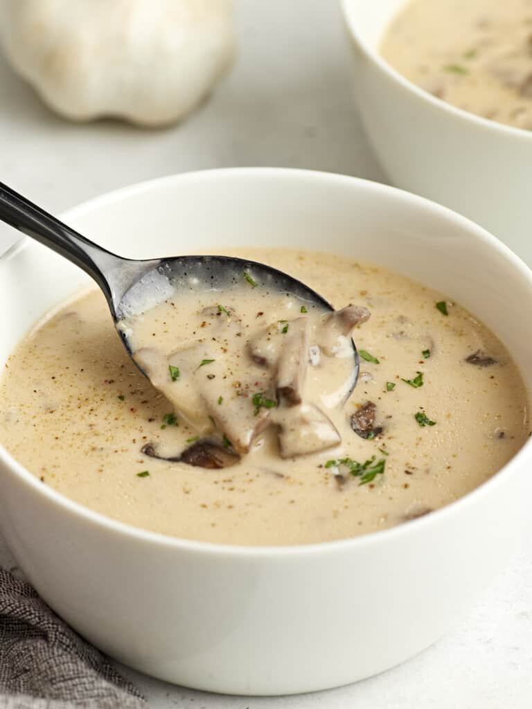

Mushroom soup

A creamy and comforting soup made with sautéed mushrooms, onions, garlic, and vegetable broth, blended to a smooth consistency, perfect for a cozy meal.
The ingredients
- Mushrooms
- Onion
- Garlic
- Vegetable broth
- Cream (optional)
- Salt and pepper
Steps
- Sauté 2 cups chopped mushrooms, 1 onion, and 2 garlic cloves in butter.
- Add 2 cups of broth and simmer for 10 minutes.
- Blend until smooth, then mix in 1/2 cup cream.
- Season with salt and pepper, serve warm.